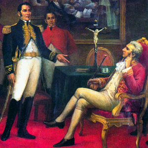
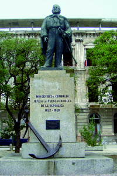

Lezione 15  L’indipendenza dell’America Latina
L’indipendenza dell’America Latina

-
380
490
-
340
510
-
240
445
-
260
498
-
340
540

ARGENTINA
L’incontro tra l’indipendentista José de San Martìn e il viceré spagnolo Josè de la Serna in un dipinto del XIX secolo.
MONTEVIDEO
Condannato a morte in contumacia dopo un fallito tentativo insurrezionale a Genova, Giuseppe Garibaldi sbarca a Rio de Janeiro nel 1835. Nel 1842 è al comando di un gruppo di volontari italiani che partecipano alle lotte sudamericane. L’eco delle vicende lo renderanno famoso in Italia, di qui l’appellativo di “eroe dei due mondi”. La sua partecipazione alle lotte indipendentiste sudamericane è ricordata, tra le altre testimonianze, da questo monumento che sorge in una piazza di Montevideo, in Uruguay.PERU'
1824: In Perù le forze indipendentiste guidate da Simòn Bolìvar e Josè de San Martìn sconfiggono gli spagnoli. Il Perù conquista l’indipendenza dalla Spagna e si costituisce come stato a sé.BOLIVIA
1825: Nasce la repubblica della Bolivia, chiamata così in onore di Bolìvar, che condusse la battaglia per la sua liberazione insieme a Antonio-José de Sucre.MONTEVIDEO
1828: Grazie all’intervento britannico il Brasile e le Province Unite firmano il Trattato di pace di Montevideo, dichiarando l’indipendenza della Provincia Orientale, poi chiamato Uruguay.